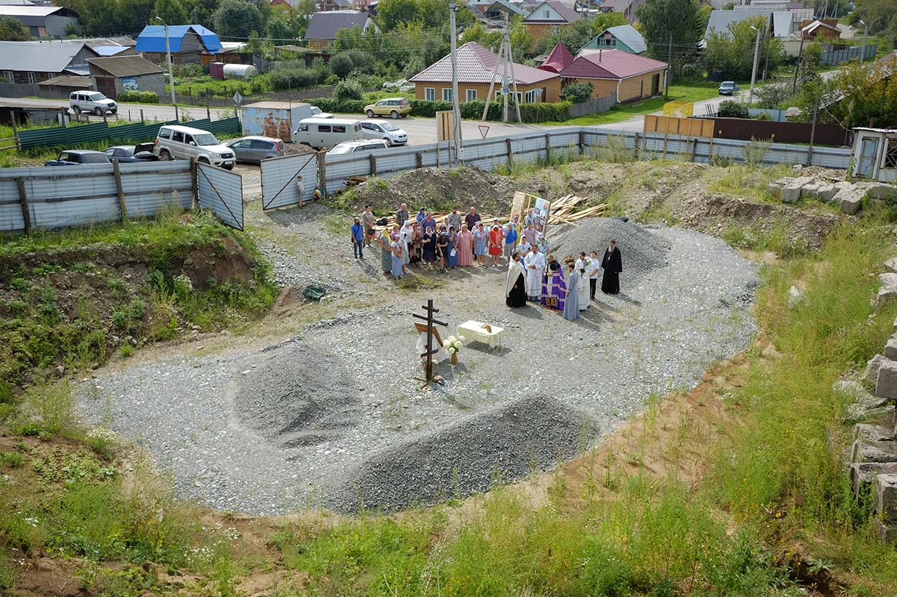

Мы строим храм! Нам нужна ваша помощь!
На территории нынешнего села Кызыл-Озек Майминского района в 1863 году Алтайской Духовной Миссией была зарегистрирована община монахинь, которая в 1881 году была преобразована в Улалинский Никольский женский монастырь. На его территории проживало до 200 монахинь.
Это была самая красивая и большая женская обитель в губернии. Название Улалинскому Никольскому женскому монастырю дали в честь находившейся в нем иконы святителя Николая.
До 1917 года на монастырской территории было два храма: Никольский собор из кирпича, освященный в 1915 году, и деревянная обитель. На священные праздники со всего Алтая здесь собирались христиане. Монастырь готовил для Улалинского стана сестёр по уходу за немощными людьми, наставниц для детского приюта. В женской миссионерской школе обучали девочек. В 30-е годы ХХ века храмы монастыря были разрушены.
29 января 2015 года епископ Горноалтайский и Чемальский Каллистрат совершил чин освящения закладного камня в основание церкви в честь святителя Николая Чудотворца в с. Кызыл-Озек Майминского района Республики Алтай.
19 августа 2018 года в селе Кызыл-Озёк, на месте строительства Никольской церкви состоялся праздничный молебен. По окончанию молебна архиепископ Каллистрат передал настоятелю строящегося храма и прихожанам Тихвинскую икону Божией Матери. Эта икона была написана по просьбе российских полярников, вместе с ними, на научно-исследовательском судне «Академик Федоров», побывала в Антарктиде, совершила кругосветное плавание и была передана для строящегося храма в с. Кызыл-Озёк в память о том, что именно в этом селе был построен храм для российской антарктической станции «Беллинсгаузен».
06 ноября 2018 года Половинкин Андрей Викторович пожертвовал для православной общины то здание, в котором сейчас находится временный храм.
09 марта 2019 года в память святого пророка Иоанна Предтечи, впервые за много лет в с. Кызыл-Озёк была совершена Божественная литургия которую возглавил Высокопреосвященнейший Каллистрат архиепископ Горноалтайский и Чемальский.
До 1917 года на монастырской территории было два храма: Никольский собор из кирпича, освященный в 1915 году, и деревянная обитель. На священные праздники со всего Алтая здесь собирались христиане. Монастырь готовил для Улалинского стана сестёр по уходу за немощными людьми, наставниц для детского приюта. В женской миссионерской школе обучали девочек. В 30-е годы ХХ века храмы монастыря были разрушены.
29 января 2015 года епископ Горноалтайский и Чемальский Каллистрат совершил чин освящения закладного камня в основание церкви в честь святителя Николая Чудотворца в с. Кызыл-Озек Майминского района Республики Алтай.
19 августа 2018 года в селе Кызыл-Озёк, на месте строительства Никольской церкви состоялся праздничный молебен. По окончанию молебна архиепископ Каллистрат передал настоятелю строящегося храма и прихожанам Тихвинскую икону Божией Матери. Эта икона была написана по просьбе российских полярников, вместе с ними, на научно-исследовательском судне «Академик Федоров», побывала в Антарктиде, совершила кругосветное плавание и была передана для строящегося храма в с. Кызыл-Озёк в память о том, что именно в этом селе был построен храм для российской антарктической станции «Беллинсгаузен».
06 ноября 2018 года Половинкин Андрей Викторович пожертвовал для православной общины то здание, в котором сейчас находится временный храм.
09 марта 2019 года в память святого пророка Иоанна Предтечи, впервые за много лет в с. Кызыл-Озёк была совершена Божественная литургия которую возглавил Высокопреосвященнейший Каллистрат архиепископ Горноалтайский и Чемальский.